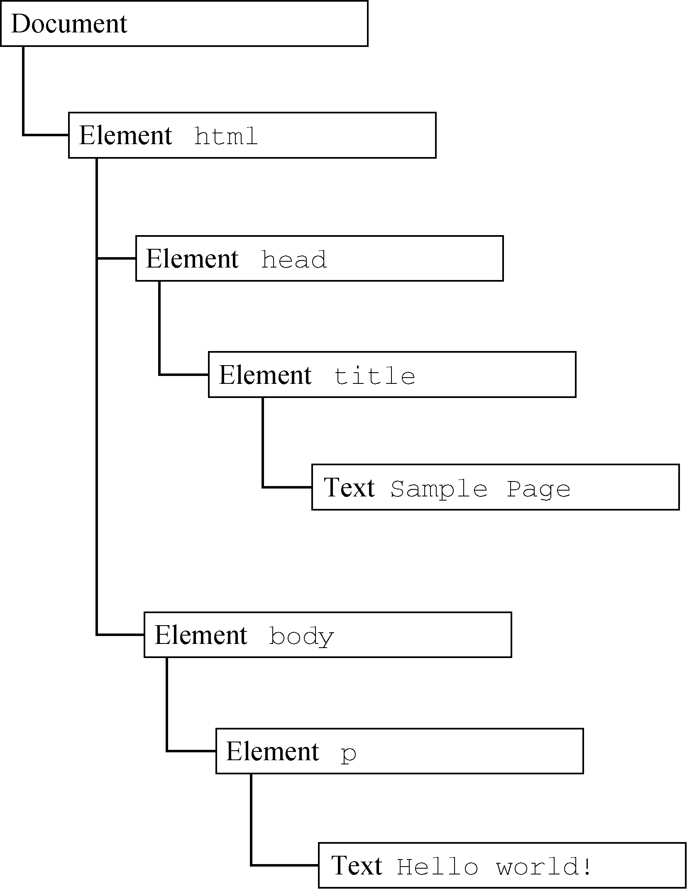
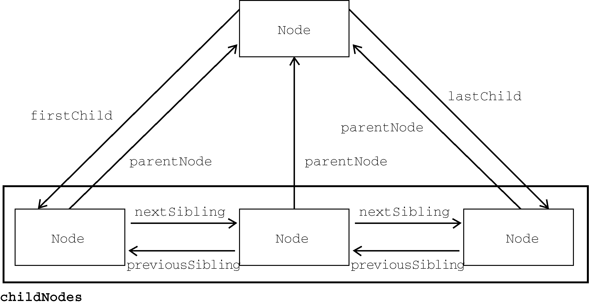

任何HTML或XML文档都可以用DOM表示为一个由节点构成的层级结构。节点分很多类型，每种类型对应着文档中不同的信息和（或）标记，也都有自己不同的特性、数据和方法，而且与其他类型有某种关系。这些关系构成了层级，让标记可以表示为一个以特定节点为根的树形结构。以下面的HTML为例：
<html>
<head>
<title>sample page</title>
</head>
<body>
<p>hello world!</p>
</body>
</html>如果表示为层级结构，则如图14-1所示。

图 14-1
其中，document节点表示每个文档的根节点。在这里，根节点的唯一子节点是<html>元素，我们称之为文档元素（documentElement）。文档元素是文档最外层的元素，所有其他元素都存在于这个元素之内。每个文档只能有一个文档元素。在HTML页面中，文档元素始终是<html>元素。在XML文档中，则没有这样预定义的元素，任何元素都可能成为文档元素。
HTML中的每段标记都可以表示为这个树形结构中的一个节点。元素节点表示HTML元素，属性节点表示属性，文档类型节点表示文档类型，注释节点表示注释。DOM中总共有12种节点类型，这些类型都继承一种基本类型。
Node类型DOM Level 1描述了名为Node的接口，这个接口是所有DOM节点类型都必须实现的。Node接口在JavaScript中被实现为Node类型，在除IE之外的所有浏览器中都可以直接访问这个类型。在JavaScript中，所有节点类型都继承Node类型，因此所有类型都共享相同的基本属性和方法。
每个节点都有nodeType属性，表示该节点的类型。节点类型由定义在Node类型上的12个数值常量表示：
Node.ELEMENT_NODE（1）Node.ATTRIBUTE_NODE（2）Node.TEXT_NODE（3）Node.CDATA_SECTION_NODE（4）Node.ENTITY_REFERENCE_NODE（5）Node.ENTITY_NODE（6）Node.PROCESSING_INSTRUCTION_NODE（7）Node.COMMENT_NODE（8）Node.DOCUMENT_NODE（9）Node.DOCUMENT_TYPE_NODE（10）Node.DOCUMENT_FRAGMENT_NODE（11）Node.NOTATION_NODE（12）节点类型可通过与这些常量比较来确定，比如：
if (somenode.nodetype == node.element_node){
alert("node is an element.");
}这个例子比较了someNode.nodeType与Node.ELEMENT_NODE常量。如果两者相等，则意味着someNode是一个元素节点。
浏览器并不支持所有节点类型。开发者最常用到的是元素节点和文本节点。本章后面会讨论每种节点受支持的程度及其用法。
nodeName与nodeValue
nodeName与nodeValue保存着有关节点的信息。这两个属性的值完全取决于节点类型。在使用这两个属性前，最好先检测节点类型，如下所示：
if (somenode.nodetype == 1){
value = somenode.nodename; // 会显示元素的标签名
}在这个例子中，先检查了节点是不是元素。如果是，则将其nodeName的值赋给一个变量。对元素而言，nodeName始终等于元素的标签名，而nodeValue则始终为null。
节点关系
文档中的所有节点都与其他节点有关系。这些关系可以形容为家族关系，相当于把文档树比作家谱。在HTML中，<body>元素是<html>元素的子元素，而<html>元素则是<body>元素的父元素。<head>元素是<body>元素的同胞元素，因为它们有共同的父元素<html>。
每个节点都有一个childNodes属性，其中包含一个NodeList的实例。NodeList是一个类数组对象，用于存储可以按位置存取的有序节点。注意，NodeList并不是Array的实例，但可以使用中括号访问它的值，而且它也有length属性。NodeList对象独特的地方在于，它其实是一个对DOM结构的查询，因此DOM结构的变化会自动地在NodeList中反映出来。我们通常说NodeList是实时的活动对象，而不是第一次访问时所获得内容的快照。
下面的例子展示了如何使用中括号或使用item()方法访问NodeList中的元素：
let firstchild = somenode.childnodes[0];
let secondchild = somenode.childnodes.item(1);
let count = somenode.childnodes.length;无论是使用中括号还是item()方法都是可以的，但多数开发者倾向于使用中括号，因为它是一个类数组对象。注意，length属性表示那一时刻NodeList中节点的数量。使用Array.prototype.slice()可以像前面介绍arguments时一样把NodeList对象转换为数组。比如：
let arrayofnodes = array.prototype.slice.call(somenode.childnodes,0);当然，使用ES6的Array.from()静态方法，可以替换这种笨拙的方式：
let arrayofnodes = array.from(somenode.childnodes);每个节点都有一个parentNode属性，指向其DOM树中的父元素。childNodes中的所有节点都有同一个父元素，因此它们的parentNode属性都指向同一个节点。此外，childNodes列表中的每个节点都是同一列表中其他节点的同胞节点。而使用previousSibling和nextSibling可以在这个列表的节点间导航。这个列表中第一个节点的previousSibling属性是null，最后一个节点的nextSibling属性也是null，如下所示：
if (somenode.nextsibling === null){
alert("last node in the parent's childnodes list.");
} else if (somenode.previoussibling === null){
alert("first node in the parent's childnodes list.");
}注意，如果childNodes中只有一个节点，则它的previousSibling和nextSibling属性都是null。
父节点和它的第一个及最后一个子节点也有专门属性：firstChild和lastChild分别指向childNodes中的第一个和最后一个子节点。someNode.firstChild的值始终等于someNode.childNodes[0]，而someNode.lastChild的值始终等于someNode.childNodes[someNode.childNodes.length-1]。如果只有一个子节点，则firstChild和lastChild指向同一个节点。如果没有子节点，则firstChild和lastChild都是null。上述这些节点之间的关系为在文档树的节点之间导航提供了方便。图14-2形象地展示了这些关系。

图 14-2
有了这些关系，childNodes属性的作用远远不止是必备属性那么简单了。这是因为利用这些关系指针，几乎可以访问到文档树中的任何节点，而这种便利性是childNodes的最大亮点。还有一个便利的方法是hasChildNodes()，这个方法如果返回true则说明节点有一个或多个子节点。相比查询childNodes的length属性，这个方法无疑更方便。
最后还有一个所有节点都共享的关系。ownerDocument属性是一个指向代表整个文档的文档节点的指针。所有节点都被创建它们（或自己所在）的文档所拥有，因为一个节点不可能同时存在于两个或者多个文档中。这个属性为迅速访问文档节点提供了便利，因为无需在文档结构中逐层上溯了。
注意 虽然所有节点类型都继承了
Node，但并非所有节点都有子节点。本章后面会讨论不同节点类型的差异。
操纵节点
因为所有关系指针都是只读的，所以DOM又提供了一些操纵节点的方法。最常用的方法是appendChild()，用于在childNodes列表末尾添加节点。添加新节点会更新相关的关系指针，包括父节点和之前的最后一个子节点。appendChild()方法返回新添加的节点，如下所示：
let returnednode = somenode.appendchild(newnode);
alert(returnednode == newnode); // true
alert(somenode.lastchild == newnode); // true如果把文档中已经存在的节点传给appendChild()，则这个节点会从之前的位置被转移到新位置。即使DOM树通过各种关系指针维系，一个节点也不会在文档中同时出现在两个或更多个地方。因此，如果调用appendChild()传入父元素的第一个子节点，则这个节点会成为父元素的最后一个子节点，如下所示：
// 假设somenode有多个子节点
let returnednode = somenode.appendchild(somenode.firstchild);
alert(returnednode == somenode.firstchild); // false
alert(returnednode == somenode.lastchild); // true如果想把节点放到childNodes中的特定位置而不是末尾，则可以使用insertBefore()方法。这个方法接收两个参数：要插入的节点和参照节点。调用这个方法后，要插入的节点会变成参照节点的前一个同胞节点，并被返回。如果参照节点是null，则insertBefore()与appendChild()效果相同，如下面的例子所示：
// 作为最后一个子节点插入
returnednode = somenode.insertbefore(newnode, null);
alert(newnode == somenode.lastchild); // true
// 作为新的第一个子节点插入
returnednode = somenode.insertbefore(newnode, somenode.firstchild);
alert(returnednode == newnode); // true
alert(newnode == somenode.firstchild); // true
// 插入最后一个子节点前面
returnednode = somenode.insertbefore(newnode, somenode.lastchild);
alert(newnode == somenode.childnodes[somenode.childnodes.length - 2]); // true
appendChild()和insertBefore()在插入节点时不会删除任何已有节点。相对地，replaceChild()方法接收两个参数：要插入的节点和要替换的节点。要替换的节点会被返回并从文档树中完全移除，要插入的节点会取而代之。下面看一个例子：
// 替换第一个子节点
let returnednode = somenode.replacechild(newnode, somenode.firstchild);
// 替换最后一个子节点
returnednode = somenode.replacechild(newnode, somenode.lastchild);使用replaceChild()插入一个节点后，所有关系指针都会从被替换的节点复制过来。虽然被替换的节点从技术上说仍然被同一个文档所拥有，但文档中已经没有它的位置。
要移除节点而不是替换节点，可以使用removeChild()方法。这个方法接收一个参数，即要移除的节点。被移除的节点会被返回，如下面的例子所示：
// 删除第一个子节点
let formerfirstchild = somenode.removechild(somenode.firstchild);
// 删除最后一个子节点
let formerlastchild = somenode.removechild(somenode.lastchild);与replaceChild()方法一样，通过removeChild()被移除的节点从技术上说仍然被同一个文档所拥有，但文档中已经没有它的位置。
上面介绍的4个方法都用于操纵某个节点的子元素，也就是说使用它们之前必须先取得父节点（使用前面介绍的parentNode属性）。并非所有节点类型都有子节点，如果在不支持子节点的节点上调用这些方法，则会导致抛出错误。
其他方法
所有节点类型还共享了两个方法。第一个是cloneNode()，会返回与调用它的节点一模一样的节点。cloneNode()方法接收一个布尔值参数，表示是否深复制。在传入true参数时，会进行深复制，即复制节点及其整个子DOM树。如果传入false，则只会复制调用该方法的节点。复制返回的节点属于文档所有，但尚未指定父节点，所以可称为孤儿节点（orphan）。可以通过appendChild()、insertBefore()或replaceChild()方法把孤儿节点添加到文档中。以下面的HTML片段为例：
<ul>
<li>item 1</li>
<li>item 2</li>
<li>item 3</li>
</ul>如果myList保存着对这个<ul>元素的引用，则下列代码展示了使用cloneNode()方法的两种方式：
let deeplist = mylist.clonenode(true);
alert(deeplist.childnodes.length); // 3（ie9之前的版本）或7（其他浏览器）
let shallowlist = mylist.clonenode(false);
alert(shallowlist.childnodes.length); // 0在这个例子中，deepList保存着myList的副本。这意味着deepList有3个列表项，每个列表项又各自包含文本。变量shallowList则保存着myList的浅副本，因此没有子节点。deepList.childNodes.length的值会因IE8及更低版本和其他浏览器对空格的处理方式而不同。IE9之前的版本不会为空格创建节点。
注意
cloneNode()方法不会复制添加到DOM节点的JavaScript属性，比如事件处理程序。这个方法只复制HTML属性，以及可选地复制子节点。除此之外则一概不会复制。IE在很长时间内会复制事件处理程序，这是一个bug，所以推荐在复制前先删除事件处理程序。
本节要介绍的最后一个方法是normalize()。这个方法唯一的任务就是处理文档子树中的文本节点。由于解析器实现的差异或DOM操作等原因，可能会出现并不包含文本的文本节点，或者文本节点之间互为同胞关系。在节点上调用normalize()方法会检测这个节点的所有后代，从中搜索上述两种情形。如果发现空文本节点，则将其删除；如果两个同胞节点是相邻的，则将其合并为一个文本节点。这个方法将在本章后面进一步讨论。
Document类型
Document类型是JavaScript中表示文档节点的类型。在浏览器中，文档对象document是HTMLDocument的实例（HTMLDocument继承Document），表示整个HTML页面。document是window对象的属性，因此是一个全局对象。Document类型的节点有以下特征：
nodeType等于9；nodeName值为"#document"；nodeValue值为null；parentNode值为null；ownerDocument值为null；DocumentType（最多一个）、Element（最多一个）、ProcessingInstruction或Comment类型。
Document类型可以表示HTML页面或其他XML文档，但最常用的还是通过HTMLDocument的实例取得document对象。document对象可用于获取关于页面的信息以及操纵其外观和底层结构。
文档子节点
虽然DOM规范规定Document节点的子节点可以是DocumentType、Element、ProcessingInstruction或Comment，但也提供了两个访问子节点的快捷方式。第一个是documentElement属性，始终指向HTML页面中的<html>元素。虽然document.childNodes中始终有<html>元素，但使用documentElement属性可以更快更直接地访问该元素。假如有以下简单的页面：
<html>
<body>
</body>
</html>浏览器解析完这个页面之后，文档只有一个子节点，即<html>元素。这个元素既可以通过documentElement属性获取，也可以通过childNodes列表访问，如下所示：
let html = document.documentelement; // 取得对<html>的引用
alert(html === document.childnodes[0]); // true
alert(html === document.firstchild); // true这个例子表明documentElement、
firstChild和childNodes[0]都指向同一个值，即<html>元素。
作为HTMLDocument的实例，document对象还有一个body属性，直接指向<body>元素。因为这个元素是开发者使用最多的元素，所以JavaScript代码中经常可以看到document.body，比如：
let body = document.body; // 取得对<body>的引用所有主流浏览器都支持document.documentElement和document.body。
Document类型另一种可能的子节点是DocumentType。<!doctype>标签是文档中独立的部分，其信息可以通过doctype属性（在浏览器中是document.doctype）来访问，比如：
let doctype = document.doctype; // 取得对<!doctype>的引用另外，严格来讲出现在<html>元素外面的注释也是文档的子节点，它们的类型是Comment。不过，由于浏览器实现不同，这些注释不一定能被识别，或者表现可能不一致。比如以下HTML页面：
<!-- 第一条注释 -->
<html>
<body>
</body>
</html>
<!-- 第二条注释 -->这个页面看起来有3个子节点：注释、<html>元素、注释。逻辑上讲，document.childNodes应该包含3项，对应代码中的每个节点。但实际上，浏览器有可能以不同方式对待<html>元素外部的注释，比如忽略一个或两个注释。
一般来说，appendChild()、removeChild()和replaceChild()方法不会用在document对象上。这是因为文档类型（如果存在）是只读的，而且只能有一个Element类型的子节点（即<html>，已经存在了）。1
文档信息
document作为HTMLDocument的实例，还有一些标准Document对象上所没有的属性。这些属性提供浏览器所加载网页的信息。其中第一个属性是title，包含<title>元素中的文本，通常显示在浏览器窗口或标签页的标题栏。通过这个属性可以读写页面的标题，修改后的标题也会反映在浏览器标题栏上。不过，修改title属性并不会改变<title>元素。下面是一个例子：
// 读取文档标题
let originaltitle = document.title;
// 修改文档标题
document.title = "new page title";接下来要介绍的3个属性是URL、domain和referrer。其中，URL包含当前页面的完整URL（地址栏中的URL），domain包含页面的域名，而referrer包含链接到当前页面的那个页面的URL。如果当前页面没有来源，则referrer属性包含空字符串。所有这些信息都可以在请求的HTTP头部信息中获取，只是在JavaScript中通过这几个属性暴露出来而已，如下面的例子所示：
// 取得完整的url
let url = document.url;
// 取得域名
let domain = document.domain;
// 取得来源
let referrer = document.referrer;URL跟域名是相关的。比如，如果document.URL是http://www.wrox.com/WileyCDA/，则document.domain就是www.wrox.com。
在这些属性中，只有domain属性是可以设置的。出于安全考虑，给domain属性设置的值是有限制的。如果URL包含子域名如p2p.wrox.com，则可以将domain设置为"wrox.com"（URL包含“www”时也一样，比如www.wrox.com）。不能给这个属性设置URL中不包含的值，比如：
// 页面来自p2p.wrox.com
document.domain = "wrox.com"; // 成功
document.domain = "nczonline.net"; // 出错！当页面中包含来自某个不同子域的窗格（<frame>）或内嵌窗格（<iframe>）时，设置document.domain是有用的。因为跨源通信存在安全隐患，所以不同子域的页面间无法通过JavaScript通信。此时，在每个页面上把document.domain设置为相同的值，这些页面就可以访问对方的JavaScript对象了。比如，一个加载自www.wrox.com的页面中包含一个内嵌窗格，其中的页面加载自p2p.wrox.com。这两个页面的document.domain包含不同的字符串，内部和外部页面相互之间不能访问对方的JavaScript对象。如果每个页面都把document.domain设置为wrox.com，那这两个页面之间就可以通信了。
浏览器对domain属性还有一个限制，即这个属性一旦放松就不能再收紧。比如，把document.domain
设置为"wrox.com"之后，就不能再将其设置回"p2p.wrox.com"，后者会导致错误，比如：
// 页面来自p2p.wrox.com
document.domain = "wrox.com"; // 放松，成功
document.domain = "p2p.wrox.com"; // 收紧，错误！定位元素
使用DOM最常见的情形可能就是获取某个或某组元素的引用，然后对它们执行某些操作。document对象上暴露了一些方法，可以实现这些操作。getElementById()和getElementsByTagName()就是Document类型提供的两个方法。
getElementById()方法接收一个参数，即要获取元素的ID，如果找到了则返回这个元素，如果没找到则返回null。参数ID必须跟元素在页面中的id属性值完全匹配，包括大小写。比如页面中有以下元素：
<div id="mydiv">some text</div>可以使用如下代码取得这个元素：
let div = document.getelementbyid("mydiv"); // 取得对这个<div>元素的引用但参数大小写不匹配会返回null：
let div = document.getelementbyid("mydiv"); // null如果页面中存在多个具有相同ID的元素，则getElementById()返回在文档中出现的第一个元素。
getElementsByTagName()是另一个常用来获取元素引用的方法。这个方法接收一个参数，即要获取元素的标签名，返回包含零个或多个元素的NodeList。在HTML文档中，这个方法返回一个HTMLCollection对象。考虑到二者都是“实时”列表，HTMLCollection与NodeList是很相似的。例如，下面的代码会取得页面中所有的<img>元素并返回包含它们的HTMLCollection：
let images = document.getelementsbytagname("img");这里把返回的HTMLCollection对象保存在了变量images中。与NodeList对象一样，也可以使用中括号或item()方法从HTMLCollection取得特定的元素。而取得元素的数量同样可以通过length属性得知，如下所示：
alert(images.length); // 图片数量
alert(images[0].src); // 第一张图片的src属性
alert(images.item(0).src); // 同上
HTMLCollection对象还有一个额外的方法namedItem()，可通过标签的name属性取得某一项的引用。例如，假设页面中包含如下的<img>元素：
<img src="myimage.gif" name="myimage">那么也可以像这样从images中取得对这个<img>元素的引用：
let myimage = images.nameditem("myimage");这样，HTMLCollection就提供了除索引之外的另一种获取列表项的方式，从而为取得元素提供了便利。对于name属性的元素，还可以直接使用中括号来获取，如下面的例子所示：
let myimage = images["myimage"];对HTMLCollection对象而言，中括号既可以接收数值索引，也可以接收字符串索引。而在后台，数值索引会调用item()，字符串索引会调用namedItem()。
要取得文档中的所有元素，可以给getElementsByTagName()传入*。在JavaScript和CSS中，*一般被认为是匹配一切的字符。来看下面的例子：
let allelements = document.getelementsbytagname("*");这行代码可以返回包含页面中所有元素的HTMLCollection对象，顺序就是它们在页面中出现的顺序。因此第一项是<html>元素，第二项是<head>元素，以此类推。
注意 对于
document.getElementsByTagName()方法，虽然规范要求区分标签的大小写，但为了最大限度兼容原有HTML页面，实际上是不区分大小写的。如果是在XML页面（如XHTML）中使用，那么document.getElementsByTagName()就是区分大小写的。
HTMLDocument类型上定义的获取元素的第三个方法是getElementsByName()。顾名思义，这个方法会返回具有给定name属性的所有元素。getElementsByName()方法最常用于单选按钮，因为同一字段的单选按钮必须具有相同的name属性才能确保把正确的值发送给服务器，比如下面的例子：
<fieldset>
<legend>which color do you prefer?</legend>
<ul>
<li>
<input type="radio" value="red" name="color" id="colorred">
<label for="colorred">red</label>
</li>
<li>
<input type="radio" value="green" name="color" id="colorgreen">
<label for="colorgreen">green</label>
</li>
<li>
<input type="radio" value="blue" name="color" id="colorblue">
<label for="colorblue">blue</label>
</li>
</ul>
</fieldset>这里所有的单选按钮都有名为"color"的name属性，但它们的ID都不一样。这是因为ID是为了匹配对应的<label>元素，而name相同是为了保证只将三个中的一个值发送给服务器。然后就可以像下面这样取得所有单选按钮：
let radios = document.getelementsbyname("color");与getElementsByTagName()一样，getElementsByName()方法也返回HTMLCollection。不过在这种情况下，namedItem()方法只会取得第一项（因为所有项的name属性都一样）。
特殊集合
document对象上还暴露了几个特殊集合，这些集合也都是HTMLCollection的实例。这些集合是访问文档中公共部分的快捷方式，列举如下。
document.anchors包含文档中所有带name属性的<a>元素。document.applets包含文档中所有<applet>元素（因为<applet>元素已经不建议使用，所以这个集合已经废弃）。document.forms包含文档中所有<form>元素（与document.getElementsByTagName ("form")返回的结果相同）。document.images包含文档中所有<img>元素（与document.getElementsByTagName ("img")返回的结果相同）。document.links包含文档中所有带href属性的<a>元素。这些特殊集合始终存在于HTMLDocument对象上，而且与所有HTMLCollection对象一样，其内容也会实时更新以符合当前文档的内容。
DOM兼容性检测
由于DOM有多个Level和多个部分，因此确定浏览器实现了DOM的哪些部分是很必要的。document.implementation属性是一个对象，其中提供了与浏览器DOM实现相关的信息和能力。DOM Level 1在document.implementation上只定义了一个方法，即hasFeature()。这个方法接收两个参数：特性名称和DOM版本。如果浏览器支持指定的特性和版本，则hasFeature()方法返回true，如下面的例子所示：
let hasxmldom = document.implementation.hasfeature("xml", "1.0");可以使用hasFeature()方法测试的特性及版本如下表所列。
| 特性 | 支持的版本 | 说明 |
|---|---|---|
Core
|
1.0、2.0、3.0 | 定义树形文档结构的基本DOM |
XML
|
1.0、2.0、3.0 |
Core的XML扩展，增加了对CDATA区块、处理指令和实体的支持 |
HTML
|
1.0、2.0 |
XML的HTML扩展，增加了HTML特定的元素和实体 |
Views
|
2.0 | 文档基于某些样式的实现格式 |
StyleSheets
|
2.0 | 文档的相关样式表 |
CSS
|
2.0 | Cascading Style Sheets Level 1 |
CSS2
|
2.0 | Cascading Style Sheets Level 2 |
Events
|
2.0、3.0 | 通用DOM事件 |
UIEvents
|
2.0、3.0 | 用户界面事件 |
TextEvents
|
3.0 | 文本输入设备触发的事件 |
MouseEvents
|
2.0、3.0 | 鼠标导致的事件（单击、悬停等） |
MutationEvents
|
2.0、3.0 | DOM树变化时触发的事件 |
MutationNameEvents
|
3.0 | DOM元素或元素属性被重命名时触发的事件 |
HTMLEvents
|
2.0 | HTML 4.01事件 |
Range
|
2.0 | 在DOM树中操作一定范围的对象和方法 |
Traversal
|
2.0 | 遍历DOM树的方法 |
LS
|
3.0 | 文件与DOM树之间的同步加载与保存 |
LS-Async
|
3.0 | 文件与DOM树之间的异步加载与保存 |
Validation
|
3.0 | 修改DOM树并保证其继续有效的方法 |
XPath
|
3.0 | 访问XML文档不同部分的语言 |
由于实现不一致，因此hasFeature()的返回值并不可靠。目前这个方法已经被废弃，不再建议使用。为了向后兼容，目前主流浏览器仍然支持这个方法，但无论检测什么都一律返回true。
文档写入
document对象有一个古老的能力，即向网页输出流中写入内容。这个能力对应4个方法：write()、writeln()、open()和close()。其中，write()和writeln()方法都接收一个字符串参数，可以将这个字符串写入网页中。write()简单地写入文本，而writeln()还会在字符串末尾追加一个换行符（\n）。这两个方法可以用来在页面加载期间向页面中动态添加内容，如下所示：
<html>
<head>
<title>document.write() example</title>
</head>
<body>
<p>the current date and time is:
<script type="text/javascript">
document.write("<strong>" + (new date()).tostring() + "</strong>");
</script>
</p>
</body>
</html>这个例子会在页面加载过程中输出当前日期和时间。日期放在了<strong>元素中，如同它们之前就包含在HTML页面中一样。这意味着会创建一个DOM元素，以后也可以访问。通过write()和writeln()输出的任何HTML都会以这种方式来处理。
write()和writeln()方法经常用于动态包含外部资源，如JavaScript文件。在包含JavaScript文件时，记住不能像下面的例子中这样直接包含字符串"</script>"，因为这个字符串会被解释为脚本块的结尾，导致后面的代码不能执行：
<html>
<head>
<title>document.write() example</title>
</head>
<body>
<script type="text/javascript">
document.write("<script type=\"text/javascript\" src=\"file.js\">" +
"</script>");
</script>
</body>
</html>虽然这样写看起来没错，但输出之后的"</script>"会匹配最外层的<script>标签，导致页面中显示出");。为避免出现这个问题，需要对前面的例子稍加修改：
<html>
<head>
<title>document.write() example</title>
</head>
<body>
<script type="text/javascript">
document.write("<script type=\"text/javascript\" src=\"file.js\">" +
"<\/script>");
</script>
</body>
</html>这里的字符串"<\/script>"不会再匹配最外层的<script>标签，因此不会在页面中输出额外内容。
前面的例子展示了在页面渲染期间通过document.write()向文档中输出内容。如果是在页面加载完之后再调用document.write()，则输出的内容会重写整个页面，如下面的例子所示：
<html>
<head>
<title>document.write() example</title>
</head>
<body>
<p>this is some content that you won't get to see because it will be
overwritten.</p>
<script type="text/javascript">
window.onload = function(){
document.write("hello world!");
};
</script>
</body>
</html>这个例子使用了window.onload事件处理程序，将调用document.write()的函数推迟到页面加载完毕后执行。执行之后，字符串"hello world!"会重写整个页面内容。
open()和close()方法分别用于打开和关闭网页输出流。在调用write()和writeln()时，这两个方法都不是必需的。
注意 严格的xhtml文档不支持文档写入。对于内容类型为
application/xml+xhtml的页面，这些方法不起作用。
1元素是htmlhtmlelement的实例，htmlhtmlelement继承htmlelement，htmlelement继承element，因此html文档可以包含子节点，但不能多于一个。——译者注
element类型除了document类型，element类型就是web开发中最常用的类型了。element表示xml或html元素，对外暴露出访问元素标签名、子节点和属性的能力。element类型的节点具有以下特征：
nodetype等于1；nodename值为元素的标签名；nodevalue值为null；parentnode值为document或element对象；element、text、comment、processinginstruction、cdatasection、entityreference类型。可以通过nodename或tagname属性来获取元素的标签名。这两个属性返回同样的值（添加后一个属性明显是为了不让人误会）。比如有下面的元素：
<div id="mydiv"></div>可以像这样取得这个元素的标签名：
let div = document.getelementbyid("mydiv");
alert(div.tagname); // "div"
alert(div.tagname == div.nodename); // true例子中的元素标签名为div，id为"mydiv"。注意，div.tagname实际上返回的是"div"而不是"div"。在html中，元素标签名始终以全大写表示；在xml（包括xhtml）中，标签名始终与源代码中的大小写一致。如果不确定脚本是在html文档还是xml文档中运行，最好将标签名转换为小写形式，以便于比较：
if (element.tagname == "div"){ // 不要这样做，可能出错！
// do something here
}
if (element.tagname.tolowercase() == "div"){ // 推荐，适用于所有文档
// 做点什么
}这个例子演示了比较tagname属性的情形。第一个是容易出错的写法，因为html文档中tagname返回大写形式的标签名。第二个先把标签名转换为全部小写后再比较，这是推荐的做法，因为这对html和xml都适用。
html元素
所有html元素都通过htmlelement类型表示，包括其直接实例和间接实例。另外，htmlelement直接继承element并增加了一些属性。每个属性都对应下列属性之一，它们是所有html元素上都有的标准属性：
id，元素在文档中的唯一标识符；title，包含元素的额外信息，通常以提示条形式展示；lang，元素内容的语言代码（很少用）；dir，语言的书写方向（"ltr"表示从左到右，"rtl"表示从右到左，同样很少用）；classname，相当于class属性，用于指定元素的css类（因为class是ecmascript关键字，所以不能直接用这个名字）。所有这些都可以用来获取对应的属性值，也可以用来修改相应的值。比如有下面的html元素：
<div id="mydiv" class="bd" title="body text" lang="en" dir="ltr"></div>这个元素中的所有属性都可以使用下列javascript代码读取：
let div = document.getelementbyid("mydiv");
alert(div.id); // "mydiv"
alert(div.classname); // "bd"
alert(div.title); // "body text"
alert(div.lang); // "en"
alert(div.dir); // "ltr"而且，可以使用下列代码修改元素的属性：
div.id = "someotherid";
div.classname = "ft";
div.title = "some other text";
div.lang = "fr";
div.dir ="rtl";并非所有这些属性的修改都会对页面产生影响。比如，把id或lang改成其他值对用户是不可见的（假设没有基于这两个属性应用css样式），而修改title属性则只会在鼠标移到这个元素上时才会反映出来。修改dir会导致页面文本立即向左或向右对齐。修改classname会立即反映应用到新类名的css样式（如果定义了不同的样式）。
如前所述，所有html元素都是htmlelement或其子类型的实例。下表列出了所有html元素及其对应的类型（斜体表示已经废弃的元素）。
| 元素 | 类型 | 元素 | 类型 |
|---|---|---|---|
| a | htmlanchorelement | col | htmltablecolelement |
| abbr | htmlelement | colgroup | htmltablecolelement |
| acronym | htmlelement | dd | htmlelement |
| address | htmlelement | del | htmlmodelement |
| applet | htmlappletelement | dfn | htmlelement |
| area | htmlareaelement | dir | htmldirectoryelement |
| b | htmlelement | div | htmldivelement |
| base | htmlbaseelement | dl | htmldlistelement |
| basefont | htmlbasefontelement | dt | htmlelement |
| bdo | htmlelement | em | htmlelement |
| big | htmlelement | fieldset | htmlfieldsetelement |
| blockquote | htmlquoteelement | font | htmlfontelement |
| body | htmlbodyelement | form | htmlformelement |
| br | htmlbrelement | frame | htmlframeelement |
| button | htmlbuttonelement | frameset | htmlframesetelement |
| caption | htmltablecaptionelement | h1 | htmlheadingelement |
| center | htmlelement | h2 | htmlheadingelement |
| cite | htmlelement | h3 | htmlheadingelement |
| code | htmlelement | h4 | htmlheadingelement |
| h5 | htmlheadingelement | pre | htmlpreelement |
| h6 | htmlheadingelement | q | htmlquoteelement |
| head | htmlheadelement | s | htmlelement |
| hr | htmlhrelement | samp | htmlelement |
| html | htmlhtmlelement | script | htmlscriptelement |
| i | htmlelement | select | htmlselectelement |
| iframe | htmliframeelement | small | htmlelement |
| img | htmlimageelement | span | htmlelement |
| input | htmlinputelement | strike | htmlelement |
| ins | htmlmodelement | strong | htmlelement |
| isindex | htmlisindexelement | style | htmlstyleelement |
| kbd | htmlelement | sub | htmlelement |
| label | htmllabelelement | sup | htmlelement |
| legend | htmllegendelement | table | htmltableelement |
| li | htmllielement | tbody | htmltablesectionelement |
| link | htmllinkelement | td | htmltablecellelement |
| map | htmlmapelement | textarea | htmltextareaelement |
| menu | htmlmenuelement | tfoot | htmltablesectionelement |
| meta | htmlmetaelement | th | htmltablecellelement |
| noframes | htmlelement | thead | htmltablesectionelement |
| noscript | htmlelement | title | htmltitleelement |
| object | htmlobjectelement | tr | htmltablerowelement |
| ol | htmlolistelement | tt | htmlelement |
| optgroup | htmloptgroupelement | u | htmlelement |
| option | htmloptionelement | ul | htmlulistelement |
| p | htmlparagraphelement | var | htmlelement |
| param | htmlparamelement |
这里列出的每种类型都有关联的属性和方法。本书会涉及其中的很多类型。
取得属性
每个元素都有零个或多个属性，通常用于为元素或其内容附加更多信息。与属性相关的dom方法主要有3个：getattribute()、setattribute()和removeattribute()。这些方法主要用于操纵属性，包括在htmlelement类型上定义的属性。下面看一个例子：
let div = document.getelementbyid("mydiv");
alert(div.getattribute("id")); // "mydiv"
alert(div.getattribute("class")); // "bd"
alert(div.getattribute("title")); // "body text"
alert(div.getattribute("lang")); // "en"
alert(div.getattribute("dir")); // "ltr"注意传给getattribute()的属性名与它们实际的属性名是一样的，因此这里要传"class"而非"classname"（classname是作为对象属性时才那么拼写的）。如果给定的属性不存在，则getattribute()返回null。
getattribute()方法也能取得不是html语言正式属性的自定义属性的值。比如下面的元素：
<div id="mydiv" my_special_attribute="hello!"></div>这个元素有一个自定义属性my_special_attribute，值为"hello!"。可以像其他属性一样使用getattribute()取得这个属性的值：
let value = div.getattribute("my_special_attribute");注意，属性名不区分大小写，因此"id"和"id"被认为是同一个属性。另外，根据html5规范的要求，自定义属性名应该前缀data-以方便验证。
元素的所有属性也可以通过相应dom元素对象的属性来取得。当然，这包括htmlelement上定义的直接映射对应属性的5个属性，还有所有公认（非自定义）的属性也会被添加为dom对象的属性。比如下面的例子：
<div id="mydiv" align="left" my_special_attribute="hello"></div>因为id和align在html中是<div>元素公认的属性，所以dom对象上也会有这两个属性。但my_special_attribute是自定义属性，因此不会成为dom对象的属性。
通过dom对象访问的属性中有两个返回的值跟使用getattribute()取得的值不一样。首先是style属性，这个属性用于为元素设定css样式。在使用getattribute()访问style属性时，返回的是css字符串。而在通过dom对象的属性访问时，style属性返回的是一个（cssstyledeclaration）对象。dom对象的style属性用于以编程方式读写元素样式，因此不会直接映射为元素中style属性的字符串值。
第二个属性其实是一类，即事件处理程序（或者事件属性），比如onclick。在元素上使用事件属性时（比如onclick），属性的值是一段javascript代码。如果使用getattribute()访问事件属性，则返回的是字符串形式的源代码。而通过dom对象的属性访问事件属性时返回的则是一个javascript函数（未指定该属性则返回null）。这是因为onclick及其他事件属性是可以接受函数作为值的。
考虑到以上差异，开发者在进行dom编程时通常会放弃使用getattribute()而只使用对象属性。getattribute()主要用于取得自定义属性的值。
设置属性
与getattribute()配套的方法是setattribute()，这个方法接收两个参数：要设置的属性名和属性的值。如果属性已经存在，则setattribute()会以指定的值替换原来的值；如果属性不存在，则setattribute()会以指定的值创建该属性。下面看一个例子：
div.setattribute("id", "someotherid");
div.setattribute("class", "ft");
div.setattribute("title", "some other text");
div.setattribute("lang","fr");
div.setattribute("dir", "rtl");setattribute()适用于html属性，也适用于自定义属性。另外，使用setattribute()方法设置的属性名会规范为小写形式，因此"id"会变成"id"。
因为元素属性也是dom对象属性，所以直接给dom对象的属性赋值也可以设置元素属性的值，如下所示：
div.id = "someotherid";
div.align = "left";注意，在dom对象上添加自定义属性，如下面的例子所示，不会自动让它变成元素的属性：
div.mycolor = "red";
alert(div.getattribute("mycolor")); // null（ie除外）这个例子添加了一个自定义属性mycolor并将其值设置为"red"。在多数浏览器中，这个属性不会自动变成元素属性。因此调用getattribute()取得mycolor的值会返回null。
最后一个方法removeattribute()用于从元素中删除属性。这样不单单是清除属性的值，而是会把整个属性完全从元素中去掉，如下所示：
div.removeattribute("class");这个方法用得并不多，但在序列化dom元素时可以通过它控制要包含的属性。
attributes 属性
element类型是唯一使用attributes属性的dom节点类型。attributes属性包含一个namednodemap实例，是一个类似nodelist的“实时”集合。元素的每个属性都表示为一个attr节点，并保存在这个namednodemap对象中。namednodemap对象包含下列方法：
getnameditem(name)，返回nodename属性等于name的节点；removenameditem(name)，删除nodename属性等于name的节点；setnameditem(node)，向列表中添加node节点，以其nodename为索引；item(pos)，返回索引位置pos处的节点。attributes属性中的每个节点的nodename是对应属性的名字，nodevalue是属性的值。比如，要取得元素id属性的值，可以使用以下代码：
let id = element.attributes.getnameditem("id").nodevalue;下面是使用中括号访问属性的简写形式：
let id = element.attributes["id"].nodevalue;同样，也可以用这种语法设置属性的值，即先取得属性节点，再将其nodevalue设置为新值，如下所示：
element.attributes["id"].nodevalue = "someotherid";removenameditem()方法与元素上的removeattribute()方法类似，也是删除指定名字的属性。下面的例子展示了这两个方法唯一的不同之处，就是removenameditem()返回表示被删除属性的attr节点：
let oldattr = element.attributes.removenameditem("id");setnameditem()方法很少使用，它接收一个属性节点，然后给元素添加一个新属性，如下所示：
element.attributes.setnameditem(newattr);一般来说，因为使用起来更简便，通常开发者更喜欢使用getattribute()、removeattribute()和setattribute()方法，而不是刚刚介绍的namednodemap对象的方法。
attributes属性最有用的场景是需要迭代元素上所有属性的时候。这时候往往是要把dom结构序列化为xml或html字符串。比如，以下代码能够迭代一个元素上的所有属性并以attribute1= "value1" attribute2="value2"的形式生成格式化字符串：
function outputattributes(element) {
let pairs = [];
for (let i = 0, len = element.attributes.length; i < len; ++i) {
const attribute = element.attributes[i];
pairs.push(`${attribute.nodename}="${attribute.nodevalue}"`);
}
return pairs.join(" ");
}这个函数使用数组存储每个名/值对，迭代完所有属性后，再将这些名/值对用空格拼接在一起。（这个技术常用于序列化为长字符串。）这个函数中的for循环使用attributes.length属性迭代每个属性，将每个属性的名字和值输出为字符串。不同浏览器返回的attributes中的属性顺序也可能不一样。html或xml代码中属性出现的顺序不一定与attributes中的顺序一致。
创建元素
可以使用document.createelement()方法创建新元素。这个方法接收一个参数，即要创建元素的标签名。在html文档中，标签名是不区分大小写的，而xml文档（包括xhtml）是区分大小写的。要创建<div>元素，可以使用下面的代码：
let div = document.createelement("div");使用createelement()方法创建新元素的同时也会将其ownerdocument属性设置为document。此时，可以再为其添加属性、添加更多子元素。比如：
div.id = "mynewdiv";
div.classname = "box";在新元素上设置这些属性只会附加信息。因为这个元素还没有添加到文档树，所以不会影响浏览器显示。要把元素添加到文档树，可以使用appendchild()、insertbefore()或replacechild()。比如，以下代码会把刚才创建的元素添加到文档的<body>元素中：
document.body.appendchild(div);元素被添加到文档树之后，浏览器会立即将其渲染出来。之后再对这个元素所做的任何修改，都会立即在浏览器中反映出来。
元素后代
元素可以拥有任意多个子元素和后代元素，因为元素本身也可以是其他元素的子元素。childnodes属性包含元素所有的子节点，这些子节点可能是其他元素、文本节点、注释或处理指令。不同浏览器在识别这些节点时的表现有明显不同。比如下面的代码：
<ul id="mylist">
<li>item 1</li>
<li>item 2</li>
<li>item 3</li>
</ul>在解析以上代码时，<ul>元素会包含7个子元素，其中3个是<li>元素，还有4个text节点（表示<li>元素周围的空格）。如果把元素之间的空格删掉，变成下面这样，则所有浏览器都会返回同样数量的子节点：
<ul id="mylist"><li>item 1</li><li>item 2</li><li>item 3</li></ul>所有浏览器解析上面的代码后，<ul>元素都会包含3个子节点。考虑到这种情况，通常在执行某个操作之后需要先检测一下节点的nodetype，如下所示：
for (let i = 0, len = element.childnodes.length; i < len; ++i) {
if (element.childnodes[i].nodetype == 1) {
// 执行某个操作
}
}以上代码会遍历某个元素的子节点，并且只在nodetype等于1（即element节点）时执行某个操作。
要取得某个元素的子节点和其他后代节点，可以使用元素的getelementsbytagname()方法。在元素上调用这个方法与在文档上调用是一样的，只不过搜索范围限制在当前元素之内，即只会返回当前元素的后代。对于本节前面<ul>的例子，可以像下面这样取得其所有的<li>元素：
let ul = document.getelementbyid("mylist");
let items = ul.getelementsbytagname("li");这里例子中的<ul>元素只有一级子节点，如果它包含更多层级，则所有层级中的<li>元素都会返回。
text类型text节点由text类型表示，包含按字面解释的纯文本，也可能包含转义后的html字符，但不含html代码。text类型的节点具有以下特征：
nodetype等于3；nodename值为"#text"；nodevalue值为节点中包含的文本；parentnode值为element对象；text节点中包含的文本可以通过nodevalue属性访问，也可以通过data属性访问，这两个属性包含相同的值。修改nodevalue或data的值，也会在另一个属性反映出来。文本节点暴露了以下操作文本的方法：
appenddata(text)，向节点末尾添加文本text；deletedata(offset, count)，从位置offset开始删除count个字符；insertdata(offset, text)，在位置offset插入text；replacedata(offset, count, text)，用text替换从位置offset到offset + count的文本；splittext(offset)，在位置offset将当前文本节点拆分为两个文本节点；substringdata(offset, count)，提取从位置offset到offset + count的文本。除了这些方法，还可以通过length属性获取文本节点中包含的字符数量。这个值等于nodevalue.length和data.length。
默认情况下，包含文本内容的每个元素最多只能有一个文本节点。例如：
<!-- 没有内容，因此没有文本节点 -->
<div></div>
<!-- 有空格，因此有一个文本节点 -->
<div> </div>
<!-- 有内容，因此有一个文本节点 -->
<div>hello world!</div>示例中的第一个<div>元素中不包含内容，因此不会产生文本节点。只要开始标签和结束标签之间有内容，就会创建一个文本节点，因此第二个<div>元素会有一个文本节点的子节点，虽然它只包含空格。这个文本节点的nodevalue就是一个空格。第三个<div>元素也有一个文本节点的子节点，其nodevalue的值为"hello world!"。下列代码可以用来访问这个文本节点：
let textnode = div.firstchild; // 或div.childnodes[0]取得文本节点的引用后，可以像这样来修改它：
div.firstchild.nodevalue = "some other message";只要节点在当前的文档树中，这样的修改就会马上反映出来。修改文本节点还有一点要注意，就是html或xml代码（取决于文档类型）会被转换成实体编码，即小于号、大于号或引号会被转义，如下所示：
// 输出为"some <strong>other</strong> message"
div.firstchild.nodevalue = "some <strong>other</strong> message";这实际上是在将html字符串插入dom文档前进行编码的有效方式。
创建文本节点
document.createtextnode()可以用来创建新文本节点，它接收一个参数，即要插入节点的文本。跟设置已有文本节点的值一样，这些要插入的文本也会应用html或xml编码，如下面的例子所示：
let textnode = document.createtextnode("<strong>hello</strong> world!");创建新文本节点后，其ownerdocument属性会被设置为document。但在把这个节点添加到文档树之前，我们不会在浏览器中看到它。以下代码创建了一个<div>元素并给它添加了一段文本消息：
let element = document.createelement("div");
element.classname = "message";
let textnode = document.createtextnode("hello world!");
element.appendchild(textnode);
document.body.appendchild(element);这个例子首先创建了一个<div>元素并给它添加了值为"message"的class属性，然后又创建了一个文本节点并添加到该元素。最后一步是把这个元素添加到文档的主体上，这样元素及其包含的文本会出现在浏览器中。
一般来说一个元素只包含一个文本子节点。不过，也可以让元素包含多个文本子节点，如下面的例子所示：
let element = document.createelement("div");
element.classname = "message";
let textnode = document.createtextnode("hello world!");
element.appendchild(textnode);
let anothertextnode = document.createtextnode("yippee!");
element.appendchild(anothertextnode);
document.body.appendchild(element);在将一个文本节点作为另一个文本节点的同胞插入后，两个文本节点的文本之间不会包含空格。
规范化文本节点
dom文档中的同胞文本节点可能导致困惑，因为一个文本节点足以表示一个文本字符串。同样，dom文档中也经常会出现两个相邻文本节点。为此，有一个方法可以合并相邻的文本节点。这个方法叫normalize()，是在node类型中定义的（因此所有类型的节点上都有这个方法）。在包含两个或多个相邻文本节点的父节点上调用normalize()时，所有同胞文本节点会被合并为一个文本节点，这个文本节点的nodevalue就等于之前所有同胞节点nodevalue拼接在一起得到的字符串。来看下面的例子：
let element = document.createelement("div");
element.classname = "message";
let textnode = document.createtextnode("hello world!");
element.appendchild(textnode);
let anothertextnode = document.createtextnode("yippee!");
element.appendchild(anothertextnode);
document.body.appendchild(element);
alert(element.childnodes.length); // 2
element.normalize();
alert(element.childnodes.length); // 1
alert(element.firstchild.nodevalue); // "hello world!yippee!"浏览器在解析文档时，永远不会创建同胞文本节点。同胞文本节点只会出现在dom脚本生成的文档树中。
拆分文本节点
text类型定义了一个与normalize()相反的方法——splittext()。这个方法可以在指定的偏移位置拆分nodevalue，将一个文本节点拆分成两个文本节点。拆分之后，原来的文本节点包含开头到偏移位置前的文本，新文本节点包含剩下的文本。这个方法返回新的文本节点，具有与原来的文本节点相同的parentnode。来看下面的例子：
let element = document.createelement("div");
element.classname = "message";
let textnode = document.createtextnode("hello world!");
element.appendchild(textnode);
document.body.appendchild(element);
let newnode = element.firstchild.splittext(5);
alert(element.firstchild.nodevalue); // "hello"
alert(newnode.nodevalue); // " world!"
alert(element.childnodes.length); // 2在这个例子中，包含"hello world!"的文本节点被从位置5拆分成两个文本节点。位置5对应"hello"和"world!"之间的空格，因此原始文本节点包含字符串"hello"，而新文本节点包含文本" world!"（包含空格）。
拆分文本节点最常用于从文本节点中提取数据的dom解析技术。
comment类型dom中的注释通过comment类型表示。comment类型的节点具有以下特征：
nodetype等于8；nodename值为"#comment"；nodevalue值为注释的内容；parentnode值为document或element对象；comment类型与text类型继承同一个基类（characterdata），因此拥有除splittext()之外text节点所有的字符串操作方法。与text类型相似，注释的实际内容可以通过nodevalue或data属性获得。
注释节点可以作为父节点的子节点来访问。比如下面的html代码：
<div id="mydiv"><!-- a comment --></div>这里的注释是<div>元素的子节点，这意味着可以像下面这样访问它：
let div = document.getelementbyid("mydiv");
let comment = div.firstchild;
alert(comment.data); // "a comment"可以使用document.createcomment()方法创建注释节点，参数为注释文本，如下所示：
let comment = document.createcomment("a comment");显然，注释节点很少通过javascrpit创建和访问，因为注释几乎不涉及算法逻辑。此外，浏览器不承认结束的</html>标签之后的注释。如果要访问注释节点，则必须确定它们是<html>元素的后代。
cdatasection类型cdatasection类型表示xml中特有的cdata区块。cdatasection类型继承text类型，因此拥有包括splittext()在内的所有字符串操作方法。cdatasection类型的节点具有以下特征：
nodetype等于4；nodename值为"#cdata-section"；nodevalue值为cdata区块的内容；parentnode值为document或element对象；cdata区块只在xml文档中有效，因此某些浏览器比较陈旧的版本会错误地将cdata区块解析为comment或element。比如下面这行代码：
<div id="mydiv"><![cdata[this is some content.]]></div>这里<div>的第一个子节点应该是cdatasection节点。但主流的四大浏览器没有一个将其识别为cdatasection。即使在有效的xhtml文档中，这些浏览器也不能恰当地支持嵌入的cdata区块。
在真正的xml文档中，可以使用document.createcdatasection()并传入节点内容来创建cdata区块。
documenttype类型documenttype类型的节点包含文档的文档类型（doctype）信息，具有以下特征：
nodetype等于10；nodename值为文档类型的名称；nodevalue值为null；parentnode值为document对象；documenttype对象在dom level 1中不支持动态创建，只能在解析文档代码时创建。对于支持这个类型的浏览器，documenttype对象保存在document.doctype属性中。dom level 1规定了documenttype对象的3个属性：name、entities和notations。其中，name是文档类型的名称，entities是这个文档类型描述的实体的namednodemap，而notations是这个文档类型描述的表示法的namednodemap。因为浏览器中的文档通常是html或xhtml文档类型，所以entities和notations列表为空。（这个对象只包含行内声明的文档类型。）无论如何，只有name属性是有用的。这个属性包含文档类型的名称，即紧跟在<!doctype后面的那串文本。比如下面的html 4.01严格文档类型：
<!doctype html public "-// w3c// dtd html 4.01// en"
"http:// www.w3.org/tr/html4/strict.dtd">对于这个文档类型，name属性的值是"html"：
alert(document.doctype.name); // "html"documentfragment类型在所有节点类型中，documentfragment类型是唯一一个在标记中没有对应表示的类型。dom将文档片段定义为“轻量级”文档，能够包含和操作节点，却没有完整文档那样额外的消耗。documentfragment节点具有以下特征：
nodetype等于11；nodename值为"#document-fragment"；nodevalue值为null；parentnode值为null；element、processinginstruction、comment、text、cdatasection或entityreference。不能直接把文档片段添加到文档。相反，文档片段的作用是充当其他要被添加到文档的节点的仓库。可以使用document.createdocumentfragment()方法像下面这样创建文档片段：
let fragment = document.createdocumentfragment();文档片段从node类型继承了所有文档类型具备的可以执行dom操作的方法。如果文档中的一个节点被添加到一个文档片段，则该节点会从文档树中移除，不会再被浏览器渲染。添加到文档片段的新节点同样不属于文档树，不会被浏览器渲染。可以通过appendchild()或insertbefore()方法将文档片段的内容添加到文档。在把文档片段作为参数传给这些方法时，这个文档片段的所有子节点会被添加到文档中相应的位置。文档片段本身永远不会被添加到文档树。以下面的html为例：
<ul id="mylist"></ul>假设想给这个<ul>元素添加3个列表项。如果分3次给这个元素添加列表项，浏览器就要重新渲染3次页面，以反映新添加的内容。为避免多次渲染，下面的代码示例使用文档片段创建了所有列表项，然后一次性将它们添加到了<ul>元素：
let fragment = document.createdocumentfragment();
let ul = document.getelementbyid("mylist");
for (let i = 0; i < 3; ++i) {
let li = document.createelement("li");
li.appendchild(document.createtextnode(`item ${i + 1}`));
fragment.appendchild(li);
}
ul.appendchild(fragment);这个例子先创建了一个文档片段，然后取得了<ul>元素的引用。接着通过for循环创建了3个列表项，每一项都包含表明自己身份的文本。为此先创建<li>元素，再创建文本节点并添加到该元素。然后通过appendchild()把<li>元素添加到文档片段。循环结束后，通过把文档片段传给appendchild()将所有列表项添加到了<ul>元素。此时，文档片段的子节点全部被转移到了<ul>元素。
attr类型元素数据在dom中通过attr类型表示。attr类型构造函数和原型在所有浏览器中都可以直接访问。技术上讲，属性是存在于元素attributes属性中的节点。attr节点具有以下特征：
nodetype等于2；nodename值为属性名；nodevalue值为属性值；parentnode值为null；text或entityreference。属性节点尽管是节点，却不被认为是dom文档树的一部分。attr节点很少直接被引用，通常开发者更喜欢使用getattribute()、removeattribute()和setattribute()方法操作属性。
attr对象上有3个属性：name、value和specified。其中，name包含属性名（与nodename一样），value包含属性值（与nodevalue一样），而specified是一个布尔值，表示属性使用的是默认值还是被指定的值。
可以使用document.createattribute()方法创建新的attr节点，参数为属性名。比如，要给元素添加align属性，可以使用下列代码：
let attr = document.createattribute("align");
attr.value = "left";
element.setattributenode(attr);
alert(element.attributes["align"].value); // "left"
alert(element.getattributenode("align").value); // "left"
alert(element.getattribute("align")); // "left"在这个例子中，首先创建了一个新属性。调用createattribute()并传入"align"为新属性设置了name属性，因此就不用再设置了。随后，value属性被赋值为"left"。为把这个新属性添加到元素上，可以使用元素的setattributenode()方法。添加这个属性后，可以通过不同方式访问它，包括attributes属性、getattributenode()和getattribute()方法。其中，attributes属性和getattributenode()方法都返回属性对应的attr节点，而getattribute()方法只返回属性的值。
注意 将属性作为节点来访问多数情况下并无必要。推荐使用
getattribute()、removeattribute()和setattribute()方法操作属性，而不是直接操作属性节点。